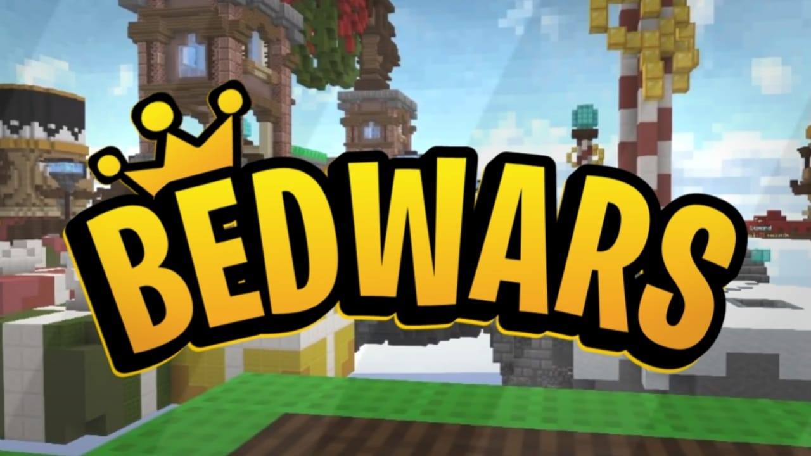

Hola! Developed interest in Bedwars! You are surely at the right spot.
Well when it comes to bedwars most prefer the classic 1.8.9 Sword PvP So here are some of the cool tips and tricks that might make you a Pro in no time without having to have those Super-Gaming Computers.
What is bedWars in simple words?
Bedwars is a Minecraft Mini-game where you need to defend your bed against teams/single enemy, while breaking others bed and killing themYou can respawn infinite no. of times untill you have your Bed but without it you might wanna reconsider agressive gameplay.
So lets jump straight into the tricks.
Inventory and items
Choosing the right items is pretty important , newcomers usually buy full armour at the very start of the game only to fall of the map to their death wasting the resources.
You dont need any mastery in Items and thier prices but always consider buying only building blocks first to defend and bridge across to the diamond generator. Once having bought upgrades you can focus on armour and weapons.
The prices and quantity of different blocks is diifferent across various Servers but always be sure to choose the item with relatively more quantity for the same price.
"8 Iron for 32 blocks" is better than "4 Iron for 8 blocks"
Speed Bridge
Many major Youtubers say that speed bridging doesn't matter but it surely is something to master as a Bedwars player for the long run. Speed bridiging is basically holding and unholding shift to remove sneak between blocks for faster speed. Speed bridiging significantly reduces time taken but can be dangerous if you fall off specially without the Sweet Bed to respawn
Here is a detailed video on the most basic Ninja bridging technique.Defend Your Bed!
Watching your favourite Pro players you sometimes not consider covering your Bed.
But just simply covering your bed helps you not get killed early in the game
Without a bed a player often becomes an easy target for teams to get free kills. Teams go for the easy base to get the kills and generator.
When on Singles always remember to cover your bed with wool before leaving the base.
However, in teams you can entrust your partner with gold to cover the bed quickly
And pheraps it is important to cover your Bed both fast and effectively. This might help you if you wanna play defensive at the start.
PvP Skills
Long story short PvP does matter , How many times have we seen even technoblade bringing himself up to a 1v4 situation and still getting out of it ALIVE!
PvP is something you can only get good by practice. There are several PvP related terms you'll come across as you dive deep into it
W-Tapping , Higher CPS , Block-Hitting , block clutch , Critical hits , Strafing and many more which might be impossible to elaborate , so here's an article explaing all the terms which you can master through tutorials.
Intel Edits might become your best friend whilst you are struggling to master PvP.
Ping
Ping in simple words is how much time your actions take to be visible to the other player, ping is represented in ms(millisecond) and thats how late your actions might appear. A lower ping is usually better than having higher one. If your ping gets above 250ms then you get a huge disadvantage with timing your hits.
Ping depends on time of the day and even the country you live. Even moving to another room might affect your ping and there's not much you can do about it. Pro players have a very high fps and good ping and it is quite noticible that they hardly take any hit in a game. THANKS TO PING!.
There are also some advantages of higher ping like taking delayed Knockback, making yourself harder to combo at times.
Theres not much you can actually do about your ping. try checking ping on a particular server, play on it if its good for you or else you might be in a disadvantage.
Game Sense
GameSense is basically how well do you understand the situation. Should you rush to the nearest base?, Should I go for the middle? or Should I camp and get Rich?. If you just want to go for a win GameSense may be the only thing you'll need.
GameSense comes just from playing the game over and over, learning the maps and understanding opponents next step.
There's hardly any GameSense tutorials on Youtube{ looked that up already ;) }. So yeah that concludes it all Tips and Tricks to be a BedWars God!.